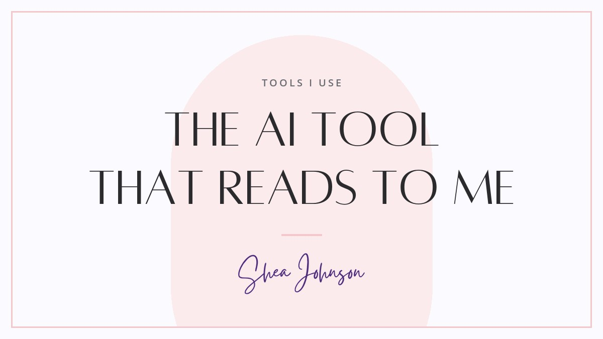
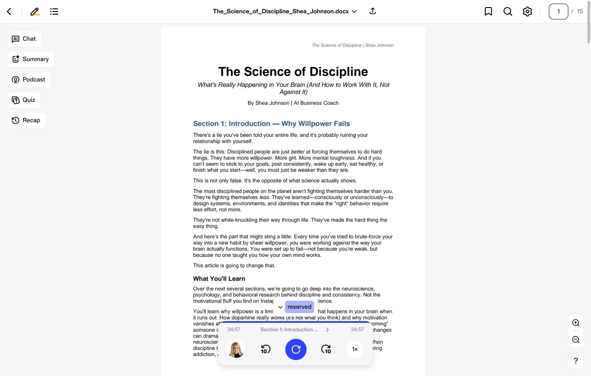
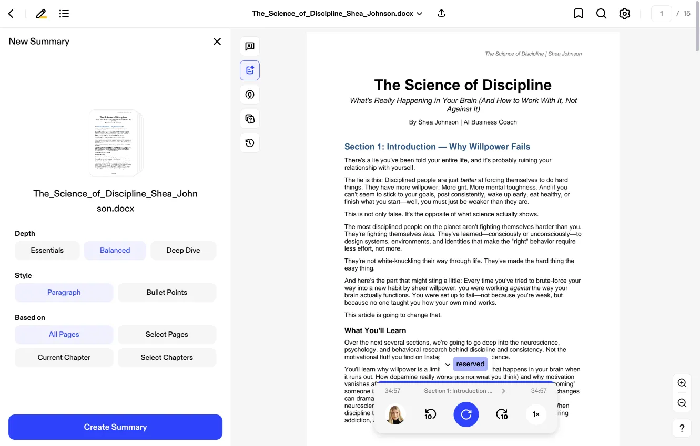

I want you to know I have a deep love for learning and education.
But life had brought me away from learning, reading, and studying for a while.
And wanting to finish school and get back into the rhythm of long hours of studying has been difficult for me.
Very recently, I went back to school.
And when I started looking at all the materials they gave us, I said to myself, “Oh my goodness, how am I gonna get all this done?”
I struggle with focus.
Sometimes I have to reread a sentence or rewind a video lesson — even though I’m doing my best to listen and pay attention in that very moment.
I’m not sure when I got like that.
I had never been like that before.
I had always been able to just read a page straight through and turn the pages like nothing.
But for some reason, over these past few years of taking courses and learning, I noticed it sometimes takes me an hour to get through even a 15 or 20 minute video.
And although I’m not proud of that, I share this story so I can share this amazing tool with you.
One that’s been very helpful for reading large documents — like textbooks.
I learned about Speechify back in April 2025.
After starting a higher learning degree.
And I was so glad I did.
I used it to read a very long study guide to myself.
It was about 40 pages long.
When I uploaded the document into the platform, it calculated that it would take about an hour and a half to read the full document to me.
This is amazing.

All I had to do was sit there and listen.
And while I listened, I read along.
There was this engraving of the information in my mind — following along and looking at the words on the screen while listening to someone read it to me.
Instead of rereading the same sentence over and over before I could move on, I was able to absorb the information at a comfortable pace.
And what made it even better?
I knew exactly when I would be done reading the document because of the time stamp.

So if you’re like me and you struggle to get through large text documents — whether they’re client documents, business documents, or textbooks when you’re investing in your education — you can use an AI tool like Speechify to help you.
Like I did.
Until next time, I hope this helps.
Disclosure: For links you click on and make a purchase, I may earn a commission at no extra cost to you. Thank you for supporting my content!
Learning doesn’t have to be a struggle.
Find the tools that work for you.
Keep going.